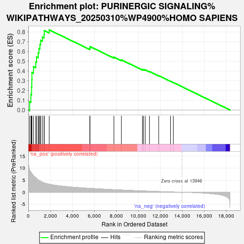
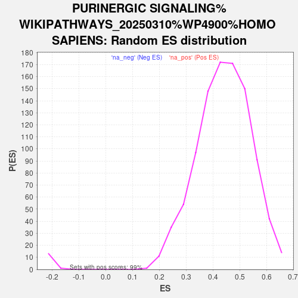

| | | Dataset | ranked_genes |
| Phenotype | NoPhenotypeAvailable |
| Upregulated in class | na_pos |
| GeneSet | PURINERGIC SIGNALING%WIKIPATHWAYS_20250310%WP4900%HOMO SAPIENS |
| Enrichment Score (ES) | 0.821048 |
| Normalized Enrichment Score (NES) | 1.8656479 |
| Nominal p-value | 0.0 |
| FDR q-value | 0.0 |
| FWER p-Value | 0.0 |
Table: GSEA Results Summary

Fig 1: Enrichment plot: PURINERGIC SIGNALING%WIKIPATHWAYS_20250310%WP4900%HOMO SAPIENS
Profile of the Running ES Score & Positions of GeneSet Members on the Rank Ordered List

Fig 2: PURINERGIC SIGNALING%WIKIPATHWAYS_20250310%WP4900%HOMO SAPIENS: Random ES distribution
Gene set null distribution of ES for PURINERGIC SIGNALING%WIKIPATHWAYS_20250310%WP4900%HOMO SAPIENS